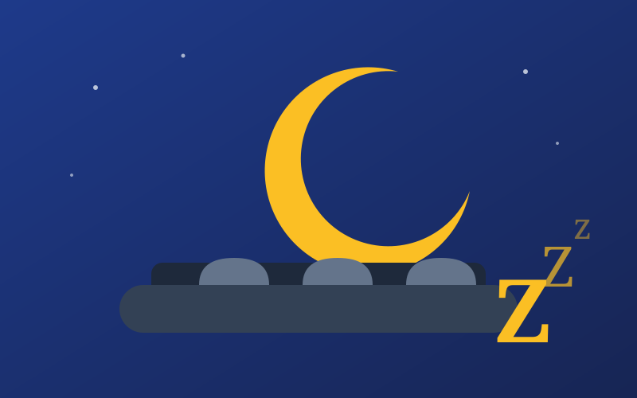

How to Sleep Fewer Hours and Wake Up with High Energy?
← Back to Articles
In this article we will learn about the 90-minute theory, and please write your comments after trying this experiment.
Wrong Bedtimes
Experts (who we don't know exactly who they are, but are casually referred to as experts) believe that seven to eight hours is the optimal amount of sleep. But achieving that can be difficult, since everyone wakes up at different times and sleeps at different times.
Therefore, by understanding the sleep cycle, we can understand how Muslims of old were able to pray night prayers (Qiyam al-Layl), then Fajr prayer, and then go about their activity quite naturally — with the importance of taking a nap of no more than 20 minutes after Dhuhr prayer.
The Sleep Calculator
According to the advice of the Sleep Calculator website, falling asleep and the number of hours of sleep follow a pattern similar to a circle that repeats every 90 minutes. So if you wake up at the wrong time during a sleep cycle, you will find yourself tired, even if you slept for a longer period. Then, what you have to do is stick to the times listed on the website instead of getting more hours of sleep.
Let's give an example to make the picture clear — the example of waking up at 6:00 AM:
According to the calculations of the experts on this specialized website, in order to wake up energetically at 6:00 AM, you must go to bed at the following times: 8:45 PM of the previous evening, or 10:15 PM, or 11:45 PM, or 1:15 AM. The website says that a normal person needs 15 minutes to fall asleep after lying on the bed, and this was taken into account within the times provided.
The Sleep Cycle
Each cycle begins with light sleep, then you enter deep sleep, then you dream, and return to light sleep. Each of these cycles takes about 90 minutes. You will feel more refreshed if you wake up at the end of one of these 90-minute cycles, because you are closer to a normal waking state. To increase your chances of feeling refreshed upon waking, you must first know the time you want to wake up at.
Remember: Light sleep → Deep sleep → Dream sleep → Light sleep... and so on; if you wake up during light sleep, you will wake up energetic.
One and a half hours of sleep is enough = 90 minutes = two halves of a football match.
And to add once more so the information sticks: during sleep the body goes through stages, each stage being 90 minutes, whose beginning and end are characterized by light sleep with deep sleep roughly in the middle. If you happen to wake up at the beginning or end of a sleep cycle, you will wake up energetic even if you only slept two cycles. And if you also wake up in the middle of a sleep cycle, you will wake up with difficulty, and you won't be able to hear the alarm easily at all.
The Practical Calculation
Practically, if you want to wake up at 4:00 AM and don't want to use the website, you can calculate sleep cycles for yourself beforehand in multiples of 90 minutes.
Example: suppose we want to sleep three cycles to wake up at 4:00 AM. We know that an hour = 60 minutes, and each sleep cycle = 90 minutes. The recommended (but not mandatory) number of sleep cycles is 5 to 6. So let's assume you want to sleep 3 cycles; it is calculated mathematically as follows:
- 3 cycles × 90 minutes = 270 minutes
- 270 ÷ 60 = 4.5 hours
Following this example, the person would sleep at 11:30 PM, but with 15 minutes accounted for to fall asleep, avoiding holding the phone, making sure the place is pitch dark and dim, and that the place is quiet; so he would have slept three cycles until 4:00 AM.
Can You Sleep Only Four Hours and Wake Up Energetic?
Or what could you do if you have 60 days of free time every year? It's wonderful to have a lot of time during the day, where you will feel you are living a double life.
Those who sleep short hours don't oversleep. They wake up early, around 4:00 or 5:00 AM, excited to start their day. Margaret Thatcher may have been one of them — she is famously said to have needed only four hours of sleep each night, while Mariah Carey claims she needs 15 hours a day.
What makes these people content with such a small number of hours while others spend half their day drowsy? And can we change our sleep habits to become more efficient?
But why is sleep so important? This is still shrouded in mystery. There is consensus that the brain needs sleep to carry out maintenance and self-organization, to rest from the continuous work during the day. During sleep, the brain renews the activity of its cells, gets rid of toxins that accumulate during the day, renews its energy, and stores information.
Shortcut
The best effective way to improve your sleep habits is to commit to waking up at a specific hour in the morning. When your body knows you will wake up at a specific hour, it makes your sleep period highly effective, along with committing to multiples of 90 minutes.
Studies indicate that our bodies begin to wake up an hour and a half before we actually wake up. The body loves regularity, so if you shorten your sleep hours or change your sleep patterns, it will be difficult for your body to understand when to start waking up.
Things to Avoid Before Bed
First, we present 6 things you should not do before sleep, because they affect its quality and may even cause insomnia:
- Drinking coffee: Consuming a caffeinated drink after dinner affects your sleep. Caffeine is hidden in many products, such as tea, chocolate, soft drinks and energy drinks.
- Exercising or working out: Make sure to finish any workout or sports activity at least 3 hours before going to bed.
- Drinking too much water: Water is very necessary and important for the body, but drinking a large amount before bed may lead to waking up at night to go to the bathroom. So hydrate your body with water throughout the day to avoid drinking your daily water intake all at once before sleep.
- Sitting in front of the computer: Many of us sit in front of a computer screen before sleep, but artificial light is harmful to sleep, especially the blue light emitted from screens.
- Eating snacks: Eating snacks right before bed affects your metabolism and increases the risk of indigestion and nightmares. It is therefore advisable to allow a full hour before sleep, and avoid sleeping on a completely empty stomach as much as possible.
- Anger: Discussions that make you angry late at night can lead to the release of hormones that keep you awake for longer.
The best time to sleep is between 8:30 PM and 11:00 PM, in order to benefit from the melatonin hormone, which reaches its peak during this period, thus increasing sleep quality.
Symptoms of Sleep Deprivation or Poor Sleep
Sleeping short insufficient periods has negative effects on health, on quality of life, and on life itself. It causes:
- Depression and weight gain
- Making a person prone to stroke and diabetes
- Daytime inattention, difficulty concentrating and lower work performance, which may reach gloominess
Lack of deep sleep makes a person weak against stress and increases feelings of anxiety, as well as many health problems such as high blood pressure and eating disorders.
Medical Tips for Healthy, Deep and Comfortable Sleep
- Avoid short naps in front of the TV before bed, as they can cause nighttime insomnia.
- The room temperature should be appropriate — the ideal temperature is between 21 and 22 degrees.
- Preferably, there should be no electronic devices such as a TV, mobile phone and computer in the bedroom, because spending time in bed using these devices can ruin sleep quality.
- Night lights should not be used in the bedroom, and lighting should be dim and appropriate, because that activates the melatonin hormone, which is only secreted during sleep in the dark.
- Before going to bed, you should finish sleep preparations such as brushing your teeth or going to the bathroom.
- Foods should not be eaten after 7:00 PM, and stimulants such as tea and coffee should especially be avoided.
- Maintain fixed times for sleeping and waking up, similar to a habit, including on weekends.
- If you can't fall asleep after half an hour of going to bed, you should get up and read a book in another room, and try to sleep again.
- The bed and bedding should be comfortable according to the person's choice and preference; their quality plays a role in comfortable sleep.
Conclusion
If there are any questions or inquiries, please put them in the comments. Thank you for your kind reading, and I hope you benefited.
Sources
- Sleep Calculator
- Sleep at these times only to be able to wake up energetic — DW Arabic
- A doctor explains how to calculate the ideal sleep time to wake up refreshed — RT Arabic
- Cute Engineers — Facebook
- Is four hours of sleep enough for you? — BBC News Arabic
- This is the best time to sleep at night, and don't do these things before it — Al Jazeera
The original article was published on the blog Mafaateeh Al-Hamdani | The Veteran on 13/03/2022 by Eng. Mohammed Taher Al-Hamdani.